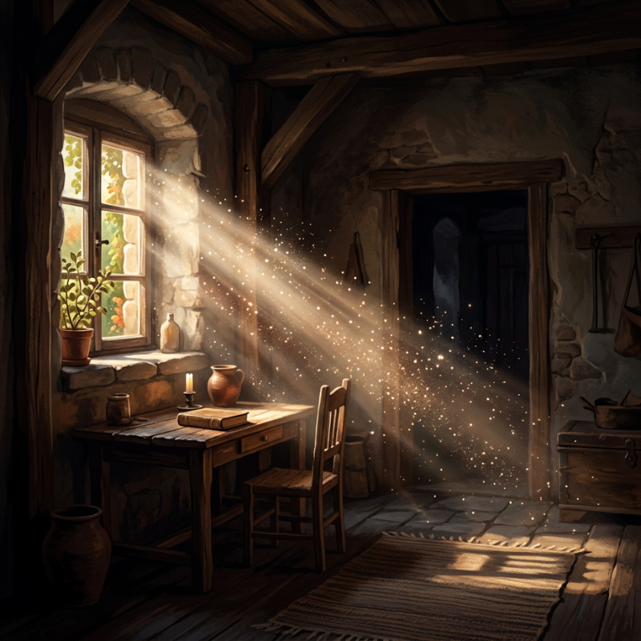
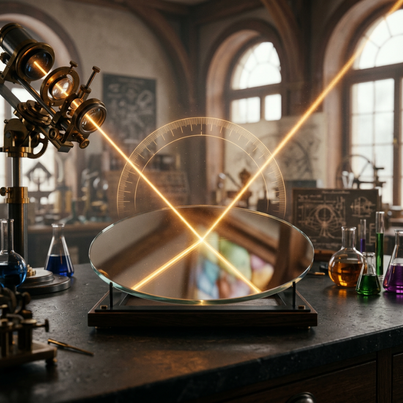
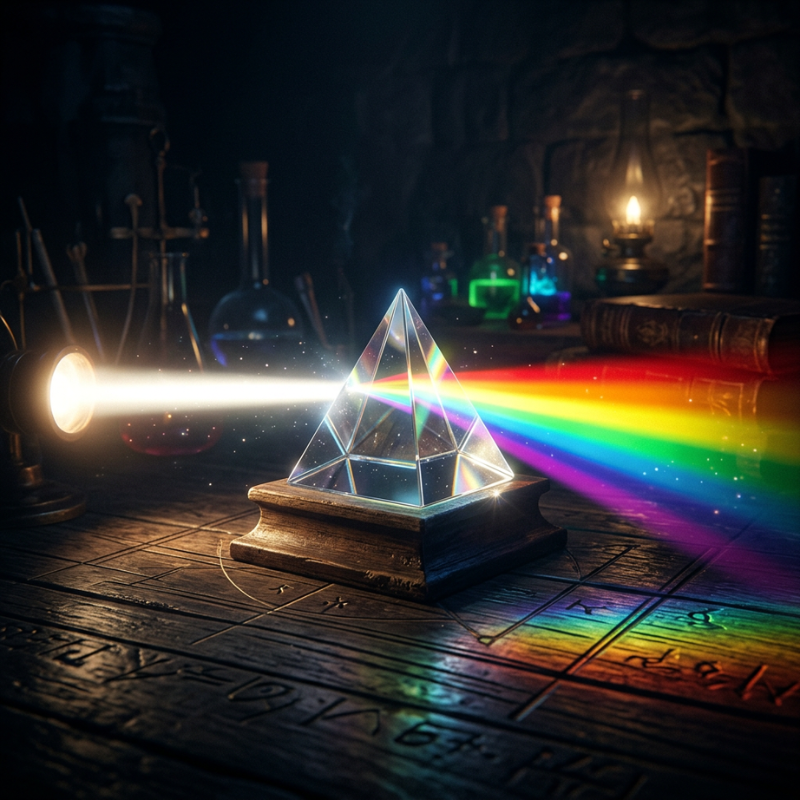
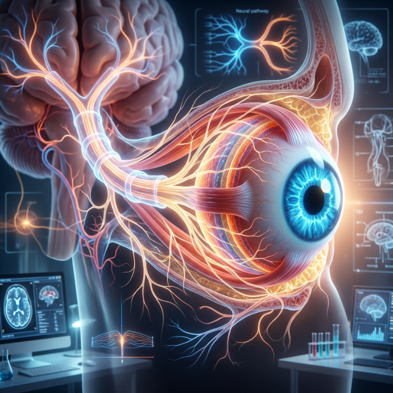
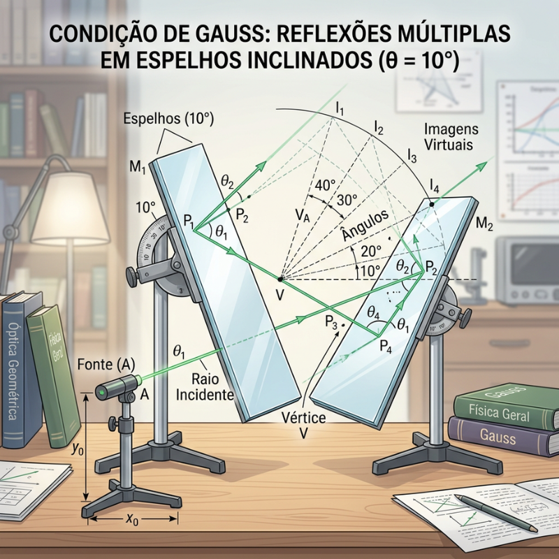

01

01
Propriedade da luz
A luz se propaga em linha reta e não precisa de um meio material para se propagar
01

01
Propriedade da luz
A luz se propaga em linha reta e não precisa de um meio material para se propagar
02

02
Reflexão da luz
O ângulo de incidência é igual ao ângulo de reflexão em espelhos planos.
03

03
Fenômenos da luz
Alterações sofridas pela luz em sua direção, velocidade ou intensidade ao interagir com a matéria.
04
04
Lentes
Dispositivos ópticos feitos de material transparente que utilizam a refração para desviar os raios de luz e formar imagens. As lentes podem ser convergentes ou divergentes.
05

05
Óptica do ser humano
Sistema óptico natural onde a córnea e o cristalino funcionam como lentes convergentes, refratando a luz para formar uma imagem real e invertida na retina.
06

06
Condição de Gauss
Conjunto de regras para espelhos e lentes que exige raios de luz pouco inclinados, próximos ao eixo principal e abertura dos espelhos inferior a 10° para formar imagens nítidas e sem distorções.